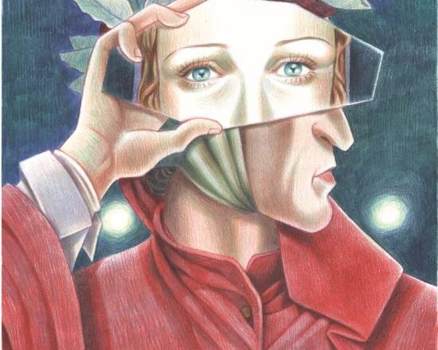
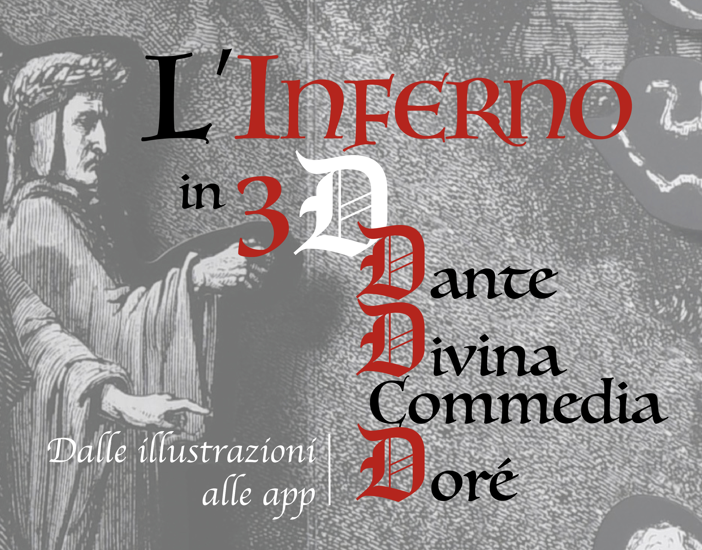
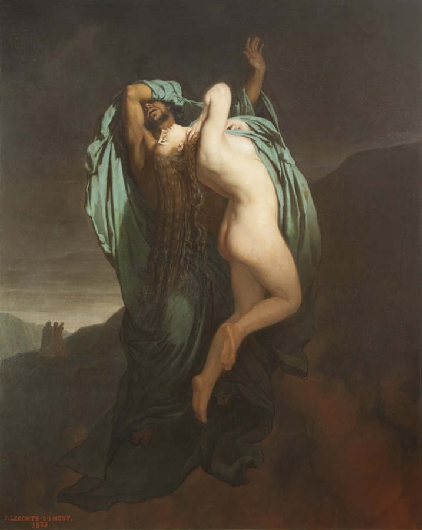
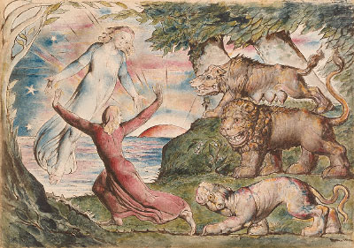
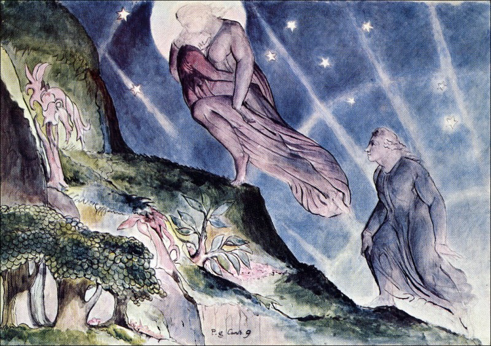
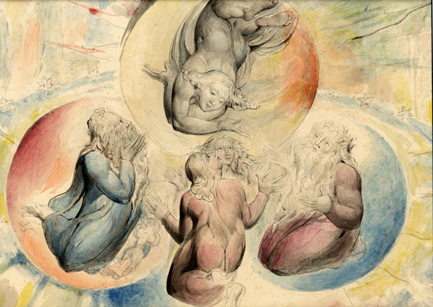

Scopri le mostre
Suggestioni dantesche: la Divina Commedia illustrata
Dante come le nuove generazioni non lo hanno mai letto… e mai visto, in una chiave interpretativa dell’opera che è, al contempo, aderente al testo e vicina ai nostri tempi. E nella dimensione corale tanto auspicata dal Poeta.
Il viaggio letterario per eccellenza in una mostra itinerante che parte il 10 maggio dal Museo del Fumetto di Cosenza, per poi viaggiare a New York, Roma e Barcellona.
In apertura: Paradiso, tavola 27 di Anna Cercignano.
Scopri di più
Scopri le mostre

Mostra Divina Commedia: Le visioni di Doré
Incubi, angosce, estasi di grandi illustratori della Divina Commedia in un percorso di notevole suggestione che conduce il visitatore dalle tenebre infernali alla luce paradisiaca nelle sale della Villa dei Capolavori.
Dal 31 marzo al 1° luglio 2012 è infatti Dante – attraverso le opere d’arte di Gustave Doré, Francesco Scaramuzza e Amos Nattini dedicate alla Commedia – il protagonista di un’emozionante mostra della Fondazione Magnani Rocca.
Scopri di più
Scopri le mostre
L’Inferno in 3D: Dante, Divina Commedia, Doré. Dalle illustrazioni alle app
In occasione del settimo centenario della morte di Dante Alighieri (1321-2021), l’esposizione indaga il passaggio dalle illustrazioni ottocentesche della Commedia alla tridimensionalità dei libri pop-up, per approdare poi ai contemporanei applicativi multimediali.
Scopri di più
Scopri le mostre
Dalì. La Divina Commedia
Cento xilografie di Salvador Dalì raccontano il viaggio metaforico di Dante nei regni ultraterreni.
Tre città pugliesi ospitano la sua mostra, invitando il visitatore a ripercorrere il viaggio di Dante: l’Inferno ad Acquaviva delle Fonti, il Purgatorio a Sammichele di Bari e il Paradiso a Turi.
Scopri di più
Il progetto
La Commedia per immagini ha come obbiettivo mostrare l’influenza centenaria che la Divina Commedia di Dante Alighieri ha avuto sulle arti applicate, dal quattrocentesco Sandro Botticelli al surrealista Salvador Dalì.
Questo progetto colleziona idealmente tutte le illustrazioni dedicate alla Commedia, realizzate appunto da artisti eterogenei per provenienza, epoche e tecniche utilizzate.
All’interno del sito è al momento possibile osservare alcune opere di William Blake, Sandro Botticelli, Filippo Bigioli, Gustave Dorè e Salvador Dalì.
L’utente potrà navigare tra le illustrazioni attraverso numerosi filtri, quali il canto e il soggetto rappresentato, il luogo di esposizione, il secolo di realizzazione, l’artista, il colore dell’opera e la tecnica con cui è stata realizzata.
È inoltre possibile navigare attraverso numerosi link e pagine, per approfondire nozioni relative alle tecniche o al luogo di esposizione, o per scoprire la biografia dell’artista.
Ogni immagine è inoltre accompagnata dai versi danteschi che hanno ispirato di volta in volta gli artisti protagonisti.
Il catalogo
Inferno
Collezione delle illustrazioni dedicate all'Inferno.Permette l'accesso all'intero catalogo relativo. 
Vai alla collezione
Purgatorio
Collezione delle illustrazioni dedicate al Purgatorio.Permette l'accesso all'intero catalogo relativo. 
Vai alla collezione
Paradiso
Collezione delle illustrazioni dedicate al Paradiso.Permette l'accesso all'intero catalogo relativo. 
Vai alla collezione